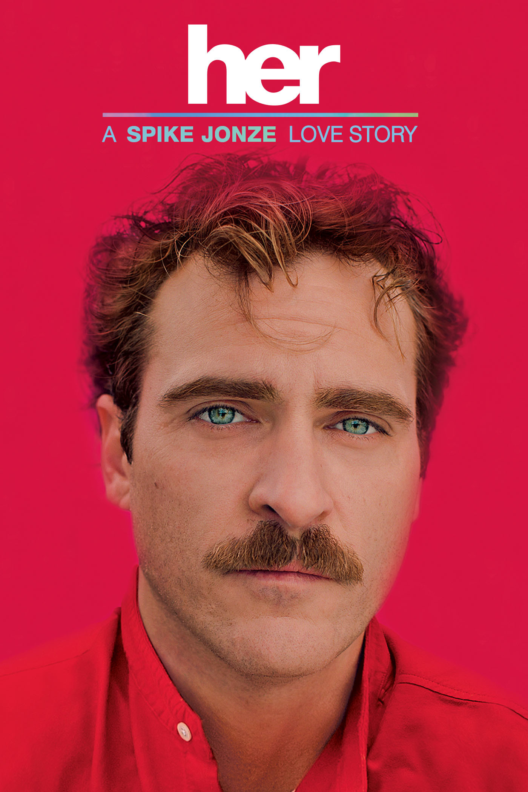
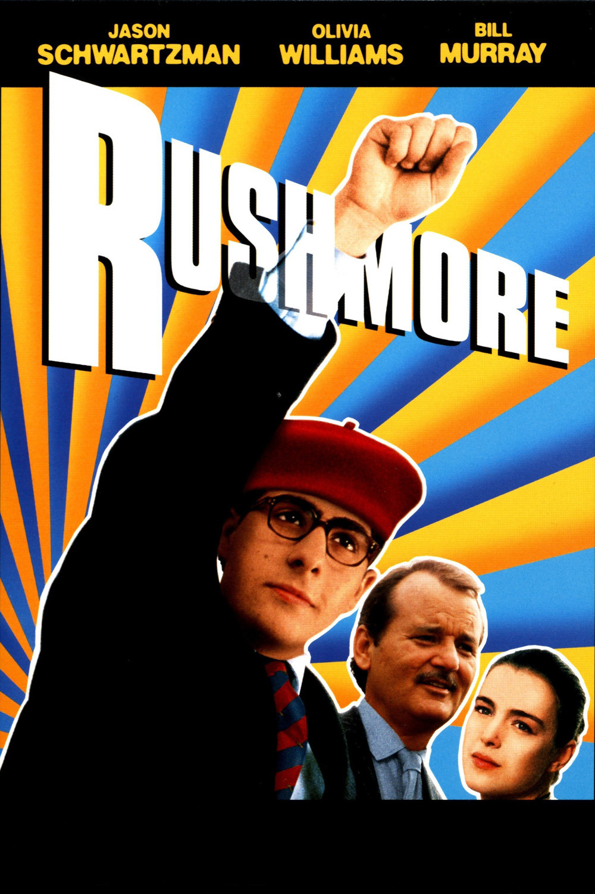
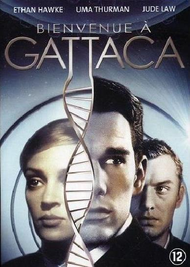

______
/ ___ \
| / ,.\ |O O
| | \d/ | \__/
|__\_____/-(..)
_/_____________/
|  |
HerLos Angeles, dans un futur proche. Theodore Twombly, un homme sensible au caractère complexe, est inconsolable suite à une rupture difficile. Il fait alors l'acquisition d'un programme informatique ultramoderne, capable de s'adapter à la personnalité de chaque utilisateur. En lançant le système, il fait la connaissance de 'Samantha', une voix féminine intelligente, intuitive et étonnamment drôle. Les besoins et les désirs de Samantha grandissent et évoluent, tout comme ceux de Theodore, et peu à peu, ils tombent amoureux… |
|  |
RushmoreLes mésaventures de Max Fischer, élève de la Rushmore Academy. Personnage hors normes, génie fougueux et brouillon, Max ne peut fournir qu'un minimum d'efforts à ses études et s'est résigné à devenir l'un des pires cancres de son établissement. En dépit de ses échecs scolaires et des admonestations répétées de son directeur, Rushmore n'en reste pas moins à ses yeux un paradis et un sanctuaire idéal pour exercer en toute liberté son inlassable créativité. |
|  |
GattacaUn seul critère de sélection, la perfection génétique. La société future divise les humains en deux catégories : la première est la caste élite ... |